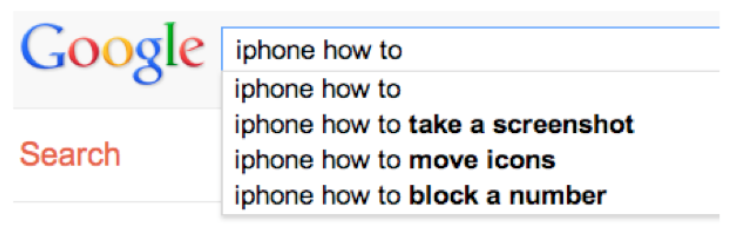

Use [Hypothesis](https://hypothes.is/) for discussion, Q&A, and additional examples or references to improve the material.
Learning Approaches
How We Learn a New User Interface

When computers first appeared in the world, there were some assumptions about how people would learn how to use the software. Programmers assumed that users would read the manual first--obviously not true.
Companies assumed that their employees would take a class first--not always true. Even now that we have online help built into virtually every desktop application, and web page help often just a search engine query away, users don't go to the help first or read overviews.
All these statements have to be caveated, because in some circumstances--some applications, some tasks, some users--these might very well be the way the user learns. Very complex, professional-level tools might well be encountered in a formal training situation--that's how pilots learn how to use in-cockpit software, for example. And some users (very few of them) *do* read manuals.
Nearly all the general statements we make in this class should be interpreted as "It Depends." There will be contexts and situations in which they're not true, and that's one of the complexities of UI design.
Learning by Doing
- User has a **goal** to achieve
- "Get rid of the redeye from my photo."
- User **explores** interface for features that satisfy the goal.

So users don't try to learn first -- instead, they typically try to do what they want to do, and explore the interface to see if they can figure out how to do it. This practice is usually called learning by doing, and it means that the user is starting out with a goal already in mind; they are more interested in achieving that goal than in learning the user interface (so any learning that happens will be secondary); and the burden is on the user interface to clearly communicate how to use it and help the user achieve their first goal at the same time.
Seeking Help
- User resorts to seeking help when they get stuck
- User already has a problem when they arrive, and they're usually looking for concrete solutions to it

Only when they get stuck in their learning-by-doing will a typical user look for help. This affects the way help systems should be designed, because it means most users (even first-timers) are arriving at help with a goal already in mind and an obstacle they've encountered to achieving that goal. A help system that starts out with a long text explaining The Philosophy of the System will not work. That philosophy will be ignored, because the user will be seeking answers to their specific problem.
Modern help systems understand this, and make it easy to ask for the user to ask the question up-front, rather than wading through pages of explanation.
Lessons for Designers
- Know the user's goals when we design
- User interface should communicate how it works and how to use it
- Help must be searchable and goal-oriented
The fact that users are learning our interfaces by actually **using** them has some implications for how we should design them.
First, we should know something about what the users' goals actually are -- collecting information about that is a critical feature of the user-centered design process that we'll talk about in a few readings. If we're designing for the wrong goals, users are going to struggle to figure out how to do what they want in our system.
Second, the UI should be the primary teacher of how to use it. The UI itself must communicate as clearly as possible how it's supposed to be used, so that users can match their goals with appropriate actions in the system. In the next reading, we'll talk about a few specific techniques for doing this--affordances, feedback, and information scent.
Third, when the user does have to resort to help, that help should be searchable and goal-directed. Providing a 30-minute video tutorial probably won't help people who learn by doing.
Try It: Google Autosuggest to find Learnability Problems
- Look at the suggested queries for prefixes such as:
- What kind of goals do you see?
- What kind of goals **don't** appear?
- What does it say about the learnability of the UI for that task?

Search engines have become even more important than in-application help systems, however. And a wonderful thing about search engines is that they show us query suggestions, so we can get some insight into the goals of thousands of other users. What is it that they're trying to do with their iPhone, but isn't easily learnable from the interface? (Adam Fourney, Richard Mann, and Michael Terry. ["Characterizing the Usability of Interactive Applications Through Query Log Analysis."](http://dl.acm.org/citation.cfm?id=1979205) CHI 2011.)
Learning by Watching
One more way that we learn how to use user interfaces is by watching other people use them. That's a major way we navigate an unfamiliar subway system, for example.
Unfortunately much of our software--whether for desktops, laptops, tablets, or smartphones--is designed for one person, and you don't often use it together with other people, reducing the opportunities for learning by watching. Yet seeing somebody else do it may well be the only way you can learn about some features that are otherwise invisible. For example, you probably know how to use Alt-Tab to switch between windows. How did you learn that? The UI itself certainly didn't communicate it to you. Pinch-zooming on smartphones and tablets is similar--but pinch-zooming may have benefited from mass media advertising showing us all how to use it.
Social computing is changing this situation somewhat. We'll look at Twitter in a moment, and see that you can learn some things from other people even though they're not sitting next to you.
Answer this question: [learn by watching](https://docs.google.com/a/juhokim.com/forms/d/e/1FAIpQLSei871RdZwY1hN7UKPxBH4mLGymWlDstxHSk4Oj-_lBGlzFyw/viewform?usp=sf_link)
Interaction Styles
Recognition vs. Recall
- **Recognition**: remembering with the help of a visual cue
- uses knowledge in the world
- **Recall**: remembering with no help
- uses knowledge in the head
- Recognition is much easier!
It's important to make a distinction between **recognition** (remembering with the help of a visible cue, also known as **knowledge in the world**) and **recall** (remembering something with no help from the outside world--purely **knowledge in the head**). Recognition is far, far easier than uncued recall.
Psychology experiments have shown that the human memory system is almost unbelievably good at recognition. In one study, people looked at 540 words for a brief time each, then took a test in which they had to determine which of a pair of words they had seen on that 540-word list. The result? 88% accuracy on average! Similarly, in a study with 612 short sentences, people achieved 89% correct recognition on average.
Note that since these recognition studies involve so many items, they are clearly going beyond working memory, despite the absence of elaborative rehearsal. Other studies have demonstrated that by extending the interval between the viewing and the testing. In one study, people looked briefly at 2,560 pictures, and then were tested a year later--and they were still 63% accurate in judging which of two pictures they had seen before, significantly better than chance. One more: people were asked to study an artificial language for 15 min, then tested on it two years later--and their performance in the test was better than chance.
Interaction Style #1: Command Language
- User types in commands in an artificial language
- all knowledge in the head; low learnability
The earliest computer interfaces were command languages: job control languages for early computers, which later evolved into the Unix command line.
Although a command language is rarely the first choice of a user interface designer nowadays, they still have their place--often as an advanced feature embedded inside another interaction style. For example, Google's query operators form a command language. Even the URL in a web browser is a command language, with particular syntax and semantics.
Interaction Style #2: Menu and Forms
- User is prompted to choose from menus and fill in forms
- all knowledge in the world; far more learnable
A menu/form interface presents a series of menus or forms to the user. Traditional (Web 1.0) web sites behave this way. Most graphical user interfaces have some kind of menu/forms interaction, such as a menubar (which is essentially a tree of menus) and dialog boxes (which are essentially forms).
Interaction Style #3: Direct Manipulation
- User interacts with visual representation of data objects
- Continuous visual representation
- Physical actions or labeled button presses
- Rapid, incremental, reversible, immediately visible effects
Next we have direct manipulation: the preeminent interface style for graphical user interfaces. Direct manipulation is defined by three principles [Shneiderman, Designing the User Interface, 2004]
1. **A continuous visual representation** of the system's data objects. Examples of this visual representation include: icons representing files and folders on your desktop; graphical objects in a drawing editor; text in a word processor; email messages in your inbox. The representation may be verbal (words) or iconic (pictures), but it's continuously displayed, not displayed on demand. Contrast that with the behavior of ed, a command language- style text editor: ed only displayed the text file you were editing when you gave it an explicit command to do so.
2. The user interacts with the visual representation using **physical actions** or **labeled button presses**. Physical actions might include clicking on an object to select it, dragging it to move it, or dragging a selection handle to resize it. Physical actions are the most direct kind of actions in direct manipulation--you're interacting with the virtual objects in a way that feels like you're pushing them around directly. But not every interface function can be easily mapped to a physical action (e.g., converting text to boldface), so we also allow for "command" actions triggered by pressing a button--but the button should be visually rendered in the interface, so that pressing it is analogous to pressing a physical button.
3. The effects of actions should be **rapid** (visible as quickly as possible), **incremental** (you can drag the scrollbar thumb a little or a lot, and you see each incremental change), **reversible*** (you can undo your operation--with physical actions this is usually as easy as moving your hand back to the original place, but with labeled buttons you typically need an Undo command), and **immediately visible** (the user doesn't have to do anything to see the effects; by contrast, a command like "cp a.txt b.txt" has no immediately visible effect).
Why is direct manipulation so powerful? It exploits perceptual and motor skills of the human machine--and depends less on linguistic skills than command or menu/form interfaces. So it's more "natural" in a sense, because we learned how to manipulate the physical world long before we learned how to talk, read, and write.
Interaction Style #4: Speech Dialog
- User speaks in natural language, and system responds in the same way
A fourth interaction style--once the province of research, but now increasingly important in real deployed apps--is speech dialog in natural language. (This exchange is from the Mercury system, a flight-search system developed at MIT in the 1990s, which could be used over the phone.)
Speech dialog leans heavily on knowledge in the head. Much of this knowledge is "natural"--in the sense that humans learn how to speak and understand their native language very early in our lives, and we have a special innate facility for spoken interaction. But beyond the mechanics of speaking, the user still needs to learn what you can say. What functionality is available in the system? What can I ask for? This is a fundamental problem even in human-human interaction, and is the reason why fast-food restaurant drive-through windows display a menu.
Comparison of Interaction Styles
- Knowledge in the head vs. world
- Error messages
- Efficiency
- User Experience
- Synchrony
- Programming difficulty
- Accessibility
Let's compare and contrast the three styles: command language (CL), menus and forms (MF), direct manipulation (DM), and speech dialog (SD).
**Learnability**: knowledge in the head vs. knowledge in the world. CL requires significant learning. Users must put a lot of knowledge into their heads in order to use the language, by reading, training, practice, etc. (Or else compensate by having manuals, reference cards, or online help close at hand while using the system.)
The MF style puts much more information into the world, i.e. into the interface itself. Well-designed DM also has information in the world, delivered by the affordances, feedback, and constraints of the visual metaphor.
Since recognition is so much easier than recall, this means that MF and DM is much more learnable and memorable than CL or SD.
**Error messages**: CL, MF, and SD often have error messages (e.g. "you didn't enter a phone number"), but DM rarely needs error messages. There's no error message when you drag a scrollbar too far, for example; the scrollbar thumb simply stops, and the visual constraints of the scrollbar make it obvious why it stopped.
**Efficiency**: Experts can be very efficient with CL, since they don't need to wait for and visually scan system prompts, and many CL systems have command histories and scripting facilities that allow commands to be reused rather than constantly retyped. Efficient performance with MF interfaces demands good shortcuts (e.g. keyboard shortcuts, tabbing between form fields, typeahead). Efficient performance with DMs is possible when the DM is appropriate to the task; but using DM for a task it isn't well-suited for may feel like manual labor with a mouse.
**User type**: CL is generally better for expert users, who keep their knowledge active and who are willing to invest in training and learning in exchange for greater efficiency. MF, DM, and SD are generally better for novices and infrequent users.
**Synchrony**: Command languages are synchronous (first the user types a complete command, then the system does it). So are menu systems and forms; e.g., you fill out a web form, and then you submit it. Speech requires turn-taking between the system and user, so it's synchronous as well. DM, on the other hand, is asynchronous: the user can point the mouse anywhere and do anything at any time. DM interfaces are necessarily event driven.
Example: Twitter's Tweet Creation UI
- What aspects of this UI use knowledge in the head?
- What aspects use knowledge in the world?

Let's look at Twitter's interface--specifically, let's focus on the interface for creating a new tweet. What aspects of this interface are knowledge-in-the-world, and what aspects require knowledge in the head? In what way is Twitter a hybrid of a command language and a menu/form interface?
Twitter is actually an unusual kind of command interface in that examples of "commands" (formatted tweets generated by other users) are constantly flowing at the user. So the user can do a lot of learning by watching on Twitter. On the other hand, learning by doing is somewhat more embarrassing, because your followers can all see your mistakes (the incorrect tweets you send out while you're still figuring out how to use it).
Self Disclosure
**Self-disclosure** is a technique for making a command language more visible, helping the user learn the available commands and syntax. Self-disclosure is useful for interfaces that have both a traditional GUI (with menus and forms and possibly direct manipulation) as well as a command language (for scripting). When the user issues a command in the GUI part, the interface also displays the command in the command language that corresponds to what they did. A primitive form of self-disclosure is the address bar in a web browser--when you click on a hyperlink, the system displays to you the URL that you could have typed in order to visit the page. A more sophisticated kind of self-disclosure happens in Excel: when you choose the sum function from the toolbar, and drag out a range of cells to be summed, Excel shows you how you could have typed the formula instead. (Notice that Excel also uses a tooltip, to make the syntax of the formula more visible.)
On the bottom is another example of self-disclosure: Google's Advanced Search form, which allows the user to specify search options by selecting them from menus, the results of which are also displayed as a commandbased query ("microsoft windows" "operating system" OR OS -glass -washing site:microsoft.com) which can be entered on the main search page. (example suggested by Geza Kovacs)
Conceptual Models
Models
- Model of a system = how it works
- its constituent parts and how they work together to do what the system does
Regardless of interaction style, learning a new system requires the user to build a mental model of how the system works. Learnability can be strongly affected by difficulties in building that model.
A **model** of a system is a way of describing how the system works. A model specifies what the parts of the system are, and how those parts interact to make the system do what it's supposed to do.
For example, at a high level, the model of Twitter is that there are other **users** in the system, you have a list of people that you **follow** and a list of people that follow you, and each user generates a stream of **tweets** that are seen by their followers, mixed together into a **feed**. These are all the parts of the system. At a more detailed level, tweets and people have attributes and data, and there are actions that you can do in the system (viewing tweets, creating tweets, following or unfollowing, etc.). These data items and actions are also parts of the model.
Three Models in UI Design

There are actually several models you have to worry about in UI design:
* The **system model** (sometimes called implementation model) is how the system actually works.
* The **interface model** (or manifest model) is the model that the system presents to the user through its user interface.
* The **user model** (or conceptual model) is how the user thinks the system works.
A cell phone presents the same simple interface model as a conventional wired phone, even though its system model is quite a bit more complex. A cell phone conversation may be handed off from one cell tower to another as the user moves around. This detail of the system model is hidden from the user.
As a software engineer, you should be quite familiar with this notion. A module interface offers a certain model of operation to clients of the module, but its implementation may be significantly different.
In software engineering, this divergence between interface and implementation is valued as a way to manage complexity and plan for change. In user interface design, we value it primarily for other reasons: the interface model should be simpler and more closely reflect the user's model of the actual task.
User's Model May Be Wrong
The user's model may be totally wrong without affecting the user's ability to use the system. A popular misconception about electricity holds that plugging in a power cable is like plugging in a water hose, with electrons traveling from the power company through the cable into the appliance. The actual system model of household AC current is of course completely different: the current changes direction many times a second, and the actual electrons don't move far, and there's really a circuit in that cable, not just a one-way tube. But the user model is simple, and the interface model supports it: plug in this tube, and power flows to the appliance.
But a wrong user model can also lead to problems. Consider a household thermostat, which controls the temperature of a room. If the room is too cold, what's the fastest way to bring it up to the desired temperature?
Some people would say the room will heat faster if the thermostat is turned all the way up to maximum temperature. This response is triggered by an incorrect mental model about how a thermostat works: either the timer model, in which the thermostat controls the duty cycle of the furnace, i.e. what fraction of time the furnace is running and what fraction it is off; or the valve model, in which the thermostat affects the amount of heat coming from the furnace. In fact, a thermostat is just an on-off switch at the set temperature. When the room is colder than the set temperature, the furnace runs full blast until the room warms up. A higher thermostat setting will not make the room warm up any faster. (Norman, Design of Everyday Things, 1988)
These incorrect models shouldn't simply be dismissed as "ignorant users." (Remember, the user is always right! If there's a consistent problem in the interface, it's probably the interface's fault.) These user models for heating are perfectly correct for other systems: a car heater and a stove burner both use the valve model. And users have no problem understanding the model of a dimmer switch, which performs the analogous function for light that a thermostat does for heat. When a room needs to be brighter, the user model says to set the dimmer switch right at the desired brightness.
The problem here is that the thermostat isn't effectively communicating its model to the user. In particular, there isn't enough feedback about what the furnace is doing for the user to form the right model.